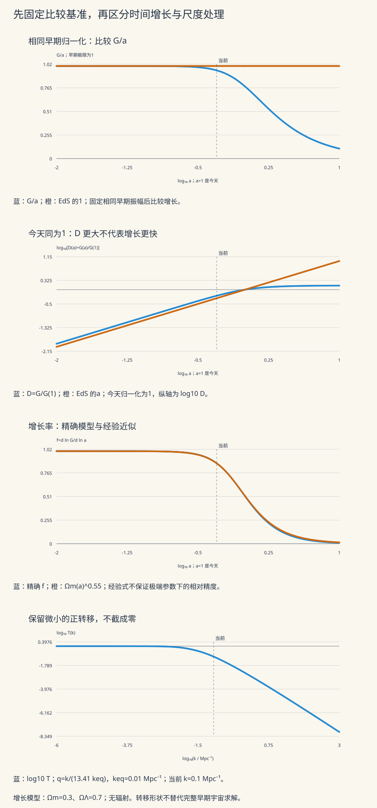

本页目录
宇宙学 III · 涨落、转移函数与结构增长
宇宙膨胀会稀释物质，引力却把物质拉向稍密的地方。结构形成研究的是：初始差异如何随时间放大，又为什么不同尺度放大的程度不同？先读 FRW 背景、热历史 与 连续介质。本页把“随时间长多少”“早期改变了哪些尺度”“怎样变成可观测统计量”分开计算，再连接起来。
学习层：先分清三种增长量
相同的增长历史，换一种归一化就可能给人相反的第一印象。先认清纵轴，再问哪一个宇宙长得更快。
| 量 | 定义 | 回答的问题 |
|---|---|---|
| 早期归一化增长 \(G\) | 物质主导极限 \(G/a\to1\) | 从相同早期振幅出发，后来得到多少？ |
| 今天归一化增长 \(D\) | \(D(a)=G(a)/G(1)\) | 今天固定为 1，过去相当于今天的多少？ |
| 对数增长率 \(f\) | \(f=d\ln G/d\ln a\) | 尺度因子变化一个相对量，振幅变化多少？ |
先预测，再使用三个模式。增长模式同时画出 \(g=G/a\)、\(D\) 和 \(f\)，并比较 16、32、64、128 步 RK4 的误差。转移模式检查波数约定和大小尺度极限；谱模式把振幅平方，得到相对功率。所有波数输入均为 \(\mathrm{Mpc}^{-1}\)。
无脚本也能核对的参考账本
增长参考取今天 \(\Omega_m=0.3\)、\(\Omega_\Lambda=0.7\)、\(a=0.5\)；转移参考取 \(k=0.1\)、\(k_{\rm eq}=0.01\)；谱另取 \(n_s=0.965\)、\(k_*=0.05\)。这些是教学输入，不是观测拟合。这里允许独立调节 \(k_{\rm eq}\)，方便分离机制；改变 \(\Omega_m\) 而保持它不变，不等于保持其它参数不变的自洽宇宙模型。
| 量 | 数值 | 含义 |
|---|---|---|
| 早期归一化 G | 0.4765850678 | 小于 EdS 的0.5 |
| 抑制因子 G/a | 0.9531701355 | 相同早期振幅 |
| 今天的 G(1) | 0.7789810168 | 模型各自的今天幅度 |
| 今天归一化 D | 0.6118057533 | 大于 EdS 的0.5 |
| 从 a=0.5 到今天的增长倍率 | 1.634505715 | 小于 EdS 的2 |
| 精确增长率 f | 0.8692851212 | 不受常数归一化影响 |
| 经验增长率 Ωm(a)^0.55 | 0.868694859 | 近似，不是恒等式 |
| 转移自变量 q | 0.7457121551 | 10/13.41，不是10 |
| 转移振幅 T | 0.1074123464 | 功率中使用其平方 |
| 相对功率 P/P(k*,1) | 0.1513383725 | 枢轴 k*=0.05 Mpc⁻¹ |
| 相对无量纲功率 Δ²/Δ²(k*,1) | 1.21070698 | 额外乘以波数比的三次方 |
实验需要脚本才能改参数；下面的推导、图和答案仍可直接阅读。

1 · 从流体运动得到增长方程
物理位置是 \(\boldsymbol r=a\boldsymbol x\)，其中 \(\boldsymbol x\) 为共动位置；相对哈勃流的本动速度是 \(\boldsymbol v=a\dot{\boldsymbol x}\)。令物质密度 \(\rho=\bar\rho(1+\delta)\)，则 \(\delta\) 表示相对密度差。背景满足 \(\dot{\bar\rho}+3H\bar\rho=0\)，但密度差还会受到物质流入、流出的影响。
以下 \(\nabla\) 都对共动坐标求导，\(\Phi\) 是扣除背景后的牛顿势，\(G_N\) 是引力常数。无压流体的方程为
当 \(|\delta|\ll1\) 且速度扰动也小，舍去扰动的乘积。写 \(\theta=\nabla\cdot\boldsymbol v\)，便得到
不要漏掉对 \(1/a\) 的求导：
于是
\(2H\dot\delta\) 来自膨胀中的运动学；密度越高的区域引力越强，最后一项推动差异增大。无压近似使这里没有波数 \(k\)，因此同一增长模可以写成 \(\delta_{\boldsymbol k}(a)=G(a)C_{\boldsymbol k}\)。
如果压强扰动满足 \(\delta p=c_s^2\delta\rho\)，傅里叶空间会多出 \(c_s^2k^2/a^2\)：
这说明“引力不分尺度”只适用于前述无压单流体模型。这里还要求尺度远小于哈勃尺度，暗能量足够平滑；辐射、重子声学、中微子自由流、非线性塌缩均需扩展方程。
2 · 先用可解宇宙校准直觉
令 \(x=\ln a\)、\(E=H/H_0\)，下标 \(x\) 表示对此变量求导。由 \(\dot G=HG_x\) 可得
实验采用空间平坦、只有无压物质与宇宙学常数的背景：
输入的 \(\Omega_m\) 是今天的值；\(\Omega_m(a)\) 随时间变。该简化模型在数学上向 \(a\to0\) 延伸，以定义早期归一化；真实宇宙更早有辐射主导时期，不能把这个延伸当成热历史。
在 Einstein–de Sitter（EdS）模型中 \(\Omega_m=1\)，试 \(G=a^p\)：
两个独立解为 \(a\) 和 \(a^{-3/2}\)。增长模是前者，但一般解还含衰减模。只给某一时刻的密度差，不给它的速度或导数，不能唯一确定以后怎样长。
3 · 同一结果，用积分与微分方程交叉核对
把方程写成 \(a\) 的导数：
在此物质＋\(\Lambda\) 模型中，代入可验证 \(E(a)\) 本身是一个解。二阶线性方程已知一个解 \(y_1\) 后，令第二解为 \(y_1u\)，可得 \(u_a\propto e^{-\int P\,da}/y_1^2\)。这里 \(P=3/a+E_a/E\)，于是第二解为 \(E\int da/(a^3E^3)\)。选择纯增长模并匹配 \(G/a\to1\)：
系数可以亲自验算：早期 \(E\simeq\sqrt{\Omega_m}a^{-3/2}\)，积分为 \(2a^{5/2}/(5\Omega_m^{3/2})\)，乘回去正好得到 \(a\)。该积分解的背景条件与归一化见 Hamilton 的增长因子推导；不能直接套到任意时变暗能量。
为避开端点分数幂，实验换元 \(a'=au^2\)，记 \(b=(1-\Omega_m)a^3/\Omega_m\)：
最后一个式子由积分上限求导而来，不需要对一组离散点做差分。实验列出每个 Simpson 面板的五个采样值、粗细规则、修正量和误差估计；误差估计属于数值诊断，并非严格区间证明。达到递归预算仍未收敛时显示 unresolved。
另一条路线直接解微分方程。令 \(V=G_x\)、\(\boldsymbol y=(G,V)\)，则
RK4 每一步保留四个阶段：
四组步数都从 \(a_i=0.01\) 的同一积分解初值出发，比较终点与积分结果的差，因此这里测量的是传播离散误差。光滑解进入渐近误差区后，步长减半常使全局误差约缩小 16 倍；极粗步长、舍入误差或零长度区间不能强求这个比例。当前 \(a=a_i\) 时实际执行零步。
4 · “抑制增长”为什么也会画在 EdS 上方？
参考模型在 \(a=0.5\) 时给出
从相同早期振幅出发，\(G<0.5\)，确实比 EdS 少长了一些。但把今天各自缩放成 1 后，\(D>0.5\)：这表示从过去长到今天的倍率较小。比较 \(G\) 与比较 \(D\) 使用的起点不同，二者并不矛盾。
当 \(\Lambda\) 主导未来，\(E\) 趋于常数，积分尾部像 \(\int da/a^3\) 一样收敛，因此 \(G\) 趋于有限值，\(g\to0\)、\(f\to0\)。常用经验式 \(f\simeq\Omega_m(a)^{0.55}\) 便于估算，却不是精确恒等式。实验特意画出两条曲线：在 \(\Omega_m=0.01,a=10\) 时，精确结果约为 \(0.000798\)，经验式约为 \(0.001788\)。两者都很小，并不意味着相对误差也小。
5 · 转移函数：先说清波数，再谈“大尺度”
对角波数 \(k\)，物理波长是 \(\lambda_{\rm phys}=2\pi a/k\)。常用的哈勃尺度进入条件 \(k\simeq aH/c\) 比较的是 \(a/k\) 与 \(c/H\)；若改用整条波长比较，便多出 \(2\pi\)。哈勃尺度也不等同于粒子视界或事件视界。
不同 \(k\) 的模式在不同背景时代进入哈勃尺度，之后受到辐射、压强等影响，形成与尺度有关的相对振幅。转移函数把这段早期处理编码成 \(T(k)\)，约定 \(T\to1\) 于大尺度。它是振幅因子，功率谱中才出现 \(T^2\)。
本页使用 BBKS 原文附录 G 的冷暗物质形状拟合：
系数与自变量约定必须一起使用。 实验明确选择 Eisenstein–Hu 式 (10) 的等价尺度写法
后两式给出常见早期辐射成分假设下的尺度换算；本实验把 \(k_{\rm eq}\) 当作独立形状输入。BBKS 原文的符号 \(\theta=\rho_{\rm er}/(1.68\rho_\gamma)\) 描述早期辐射密度，它不是此处的温度比 \(\vartheta\)。这里结合 BBKS 形状与明确的尺度换算，不能称为完整 Eisenstein–Hu 重子拟合，更不能包含声学振荡或有质量中微子的全部效应。若其它资料用 \(h\,\mathrm{Mpc}^{-1}\)，需先乘 \(h\) 换到本页单位。
展开可检验两端：
前式保留极小但非零的修正；程序使用 log1p 计算对数，只有 \(q=0\) 才直接取解析极限。后式是大 \(q\) 渐近式，不能拿它在小 \(q\) 处可能为负的数值当成真实转移函数。实验账本保留两种近似，便于观察各自在何处失效。
默认 \(k/k_{\rm eq}=10\)，实际 \(q=10/13.41=0.7457121551\)，得到 \(T=0.1074123464\)。误把 \(q\) 写成 10，改变的不是数值算法精度，而是物理尺度。
6 · 从振幅变成谱：平方与体积因子各来自哪里
明确傅里叶约定：
统计均匀、各向同性时定义
这里的 \(\delta_D^{(3)}\) 是狄拉克分布，不是密度差。\(\delta_{\boldsymbol k}\) 的单位是体积，所以 \(P\) 也有体积单位。角向积分后，
最后一式要求积分收敛。\(\Delta^2\) 无量纲，表示每个对数波数区间的方差贡献；\(P\) 的峰和 \(\Delta^2\) 的峰不必重合。
原初曲率谱满足 \(\Delta_{\mathcal R}^2\propto k^{n_s-1}\)，所以 \(P_{\mathcal R}\propto k^{n_s-4}\)。在相应线性、亚哈勃尺度关系下，泊松方程带来振幅因子 \(k^2\)，而时间和早期处理分别带来 \(G\) 与 \(T\)。因此尺度依赖为
比例常数还包括原初振幅、背景参数和约定。实验主动消去它，以今天的固定枢轴 \(k_*=0.05\ \mathrm{Mpc}^{-1}\) 为分母：
每次改变形状参数，分母也由该模型重新计算；所以这是条件化的谱形比较，不是跨模型保持同一原初振幅的比较。默认得到 \(\mathcal P=0.1513383725\)、\(\mathcal D=1.2107069800\)，同一个模式在两幅图中的相对大小不同，来自额外的 \(k^3\) 因子。
实际测量常先在半径 \(R\) 的球内平滑。球形 top-hat 窗及方差为
例如形式上取 \(n_s=1\) 并把 BBKS 小尺度渐近式无限延伸，无平滑的 \(\Delta^2\) 像 \(\ln^2k\) 增长，其方差积分发散；固定 \(R>0\) 的窗会抑制高波数。这是模型外推与积分的检查，不是宣称真实非线性宇宙由此公式描述。\(\sigma_8\) 使用 \(R=8h^{-1}\mathrm{Mpc}\)，仍需要绝对谱幅度与单位换算；本实验不从相对曲线编造 \(\sigma_8\)。
7 · 增长率怎样进入观测
星系的红移既含宇宙膨胀，也含沿视线的本动速度。在平行视线、线性近似下，以单位矢量 \(\boldsymbol n\) 表示视线方向，红移空间位置为
数目守恒与雅可比给出 \(\delta_g^s=b_g\delta-(aH)^{-1}\partial_\parallel v_\parallel\)，其中 \(b_g\) 是确定性线性星系偏置。在无旋增长模中，连续性方程要求
\(\mu=\hat{\boldsymbol k}\cdot\boldsymbol n\)。同一密度场沿不同方向出现不同功率，便提供速度与增长的信息。这里尚未包含小尺度随机速度、宽角效应、选择函数和非线性偏置。可沿 Hamilton 的线性红移畸变综述 深入；其中历史观测数值不作为本课的当前约束。
8 · 四道题，把容易混淆的环节拆开
题 1：给定 EdS 某时刻的密度差，还缺什么初值？
令 \(p_i=(d\ln\delta/d\ln a)_{a_i}\)，并设 \(\delta_i\ne0\)。写
初始密度给出 \(A+B=1\)，初始导数给出 \(A-\tfrac32B=p_i\)。联立得到
\(p_i=1\) 才是纯增长模；\(p_i=0\) 时虽初始不变，之后仍有增长部分；\(p_i=-3/2\) 是纯衰减模。连续性方程还给出 \(\theta_i=-a_iH_i p_i\delta_i\)，所以缺失的导数等价于缺失速度散度。某些混合解会穿过零，此处对数增长率无定义；本页实验选定正的纯增长模，不把混合模的零点算成积分故障。
题 2：为什么 D(0.5) 大于 0.5，仍然表示增长受抑制？
把参考模型的早期归一化结果除以今天的结果：
从 \(a=0.5\) 到今天的增长倍率是 \(1/D(0.5)\approx1.6345\)，小于 EdS 的 2。与此同时，固定早期振幅时 \(G(0.5)<0.5\)，两种陈述一致。乘一个常数不改变对数导数，所以 \(d\ln D/d\ln a=f\)。
再看参考实验的 RK4 相对终点误差：16、32、64、128 步分别约为 \(-5.31\times10^{-5}\)、\(-3.88\times10^{-6}\)、\(-2.62\times10^{-7}\)、\(-1.70\times10^{-8}\)。符号表示数值终点略偏低；相邻误差倍率逐渐靠近 16。这里每一项都与积分解比较，不能只凭最后两次数字接近就宣布物理模型正确。
题 3：把 k/keq 直接当成 q，会错在哪里？
本页约定 \(q=k/(13.41k_{\rm eq})\)。当 \(k=0.1\)、\(k_{\rm eq}=0.01\) 时，\(q=0.7457121551\)，并非 10。反过来，\(q=10\) 对应 \(k=1.341\ \mathrm{Mpc}^{-1}\)，波数大了 13.41 倍。
小 \(q\) 时第一因子为 \(1-1.17q+O(q^2)\)，第二因子为 \(1-(3.89/4)q+O(q^2)\)。相乘后一次项是 \(-(1.17+0.9725)q=-2.1425q\)。大 \(q\) 时括号的四次项主导，四分之一次方的倒数是 \(1/(6.71q)\)，再乘对数因子便得到 \(\ln(2.34q)/(15.7014q^2)\)。这两个极限都依赖同一套系数和自变量；只换自变量不换系数不会保持曲线。
题 4：振幅翻倍、功率翻几倍？为什么还不能得到 σ8？
功率是傅里叶振幅的二阶统计量，所以振幅翻倍使 \(P\) 翻四倍，固定 \(k\) 的 \(\Delta^2\) 也翻四倍。默认谱实验 \(k/k_*=2\)，因此
球形平均窗来自体积归一化的傅里叶积分：
展开 \(\sin x\) 与 \(\cos x\) 后，分子为 \(x^3/3-x^5/30+\cdots\)，故 \(W(x)=1-x^2/10+\cdots\)，并非在零处发散。把这个窗平方后对绝对 \(\Delta^2\) 积分才得到 \(\sigma_R^2\)。相对谱除掉了振幅常数，没有额外信息便无法恢复 \(\sigma_8\)。
9 · 这套解释的边界与下一步
相对密度差依赖如何选择“同一时刻”的切片，因为改变时间坐标会改变背景与扰动的分拆。亚哈勃尺度的牛顿处理有清楚的适用域；在超哈勃尺度上，应使用带规范说明的相对论扰动变量与约束方程。不能把本页的泊松关系无条件外推到所有波数。
本页解决了线性增长、归一化、早期尺度处理和谱统计之间的连接。非线性结构需要更完整的流体或粒子演化；重子与中微子会带来额外尺度依赖。下一课 暴胀与暗能量 继续追问初始涨落和晚期加速的来源。